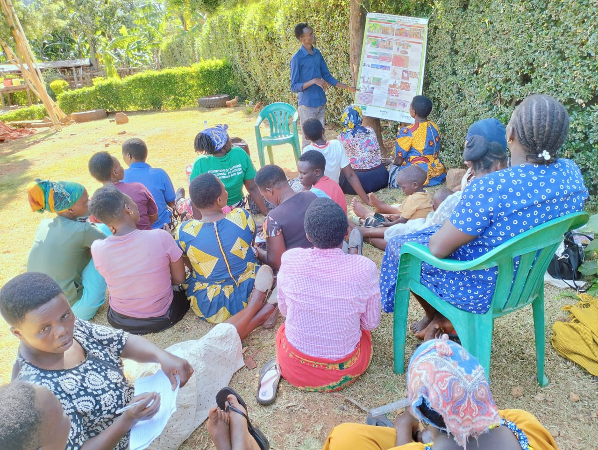

Deep Dive
Our Focus Areas
Climate-Smart Agriculture
ENAC builds farmer capacity to adopt technologies that simultaneously boost productivity, enhance resilience, and reduce emissions.
- Drought-tolerant crop varieties
- Conservation agriculture & soil health
- Efficient irrigation & water harvesting
- Agroforestry for carbon sequestration
- Early warning systems

Community Empowerment
ENAC places communities at the center, ensuring women, youth, and vulnerable households shape solutions for food security.
- Women-led savings & credit groups
- Youth agribusiness incubation
- Nutrition education for mothers
- Community health garden projects
- Inclusive governance processes
Market Access & Value Addition
Bridging smallholder farmers to profitable markets through digital platforms, infrastructure, and value chain development.
- Digital market price discovery
- Collective marketing via cooperatives
- Post-harvest storage solutions
- Food processing enterprises
- Linkages with exporters & processors
Research & Innovation
Driving evidence-based transformation through rigorous research, knowledge generation, and proven innovations.
- Field trials & demo plots
- Household dietary diversity assessments
- Agro-Nutrition Knowledge Hub (2027)
- Digital e-learning platforms
- Partnerships with universities